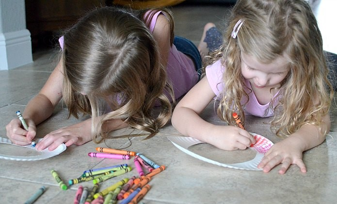
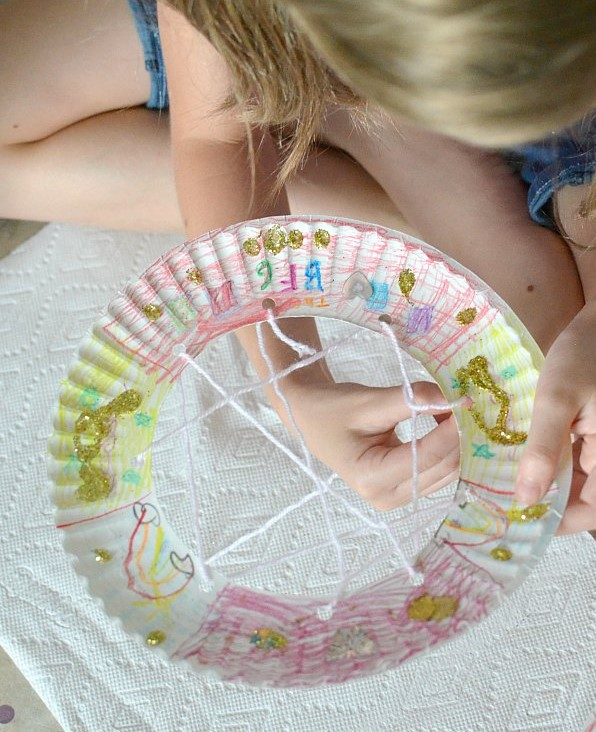

One of the popular childhood books is now a Disney movie – The BFG. Months ago in preparation for the movie coming out.People tend to fall in love with The BFG and Matilda. Inspired by the story we decided to make The BFG paper plate dream catchers.
Below are the steps for making the beautiful dream catchers! Hope you enjoy making it!
The beautiful thing about paper plate dream catchers is that there are unlimited possibilities to decorate them, so each one is unique and colorful.
The first step is to have a parent cut out the center of the paper plate leaving just the outer ring. Then use a hole punch to punch holes along the inner edge of the ring.Also place two holes at the top of the ring (for hanging) and three holes at the bottom (to hang feathers).
After that let kids use their imaginations decorate one or both sides of the paper ring with crayons, sequins, glitter and anything else that makes them happy.


Tip– lay down a few sheets of Bounty Advanced paper towels to keep glue from surfaces and help contain the glitter.
While the globs of glue are drying, little crafters take a snack break.
Return to crafting and cut three strings of yarn and tie a feather to one end. Once the feather is secure,you should strung beads onto the yarn and feather.
Next cut a length of yarn to string across the middle of the plate.
After tying off the yarn on one hole,weave the yarn through the holes across the center of the ring to create a web. While weaving,add a few beads at random to the yarn. (This is a great activity for preschoolers and fun for older kids too.)
Then it is time to attach the feathers and a loop of yarn for hanging.
This craft takes longer than expected to complete because you tend to spend so long decorating dream catchers just so. It is a perfect summer afternoon craft.